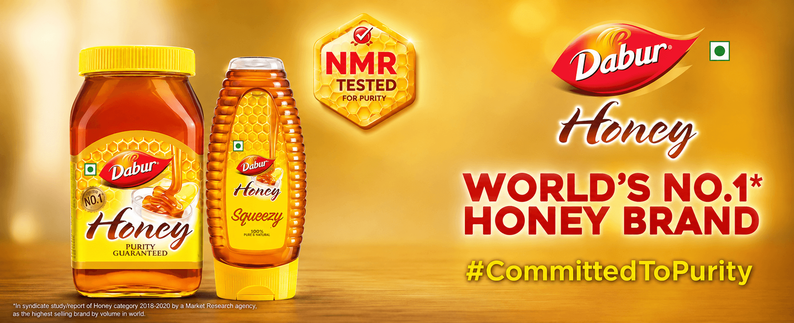
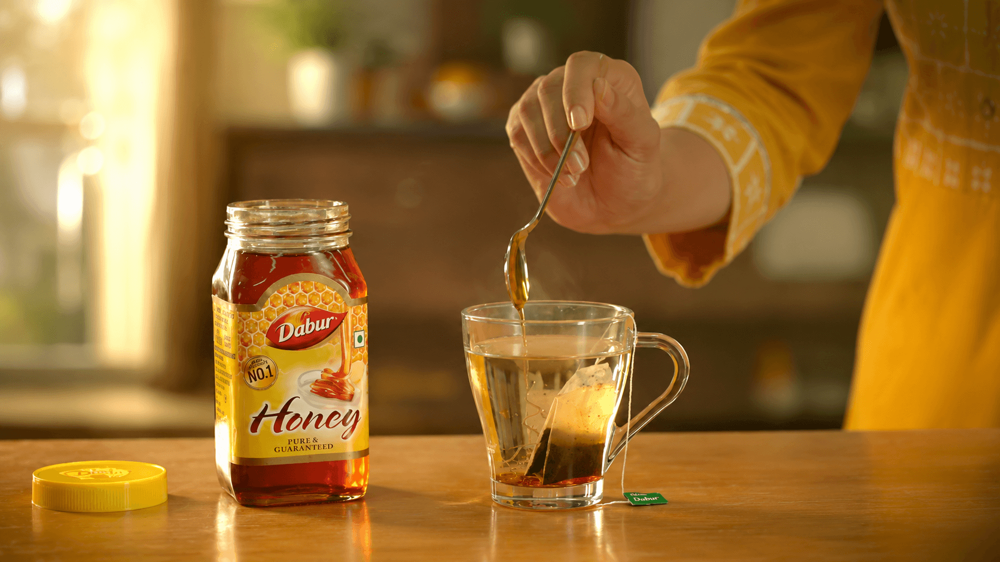

Purity cannot be judged from colour or texture alone, so the film needed to reveal the rigour behind the product.
← Back to workNature in the bottle.
Dabur Honey · NMR Film
Nature in the bottle.
Science behind the proof.

Project overview
Pure by nature.
Verified by science.
Honey begins in nature. Consumer confidence depends on proving that what reaches the bottle remains authentic and uncompromised.
The film makes a complex testing process understandable, connecting raw honey, advanced NMR profiling and Dabur’s commitment to purity.
- Product
- Natural Honey
- Format
- Brand Film
- Core Thought
- Purity + Proof
- Visual World
- Natural + Scientific
The hero film
Pure honey.
Profound proof.
A precision-led story that turns advanced NMR profiling into a clear, human reason to believe in the purity inside every bottle.
The challenge
Make the invisible
easy to believe.
NMR is sophisticated science. The communication had to make its value clear without turning the story into a technical lecture.
The creative approach
Begin with nature.
Reveal the proof.
- 01
Source the story
Open with honey’s natural origins to preserve appetite, warmth and product desirability.
- 02
Enter the lab
Translate advanced testing into clean, visual evidence that audiences can understand quickly.
- 03
Return to trust
Bring science back to the bottle, making Dabur’s commitment to purity the final takeaway.
The visual world
Warm from nature.
Precise in the lab.
Honey amber meets clinical whites and deep laboratory blue. Macro texture keeps the product sensorial, while precise graphics and controlled framing make the science feel credible.


The film grammar
Natural warmth.
Scientific precision.
Macro product
Honey’s texture and amber colour keep nature and appetite present throughout.
Laboratory world
Clean surfaces, glass and calibrated light give testing a precise visual language.
Data made visible
Measured graphics help explain profiling without overwhelming the audience.
Edit and sound
A controlled rhythm moves from source to science and resolves confidently on pack.
The outcome
A natural product.
A measurable commitment.
The film gives consumers a clear view of the testing rigour behind Dabur Honey and turns scientific capability into brand reassurance.
Clear promise
Purity becomes a demonstrated process, not only a product statement.
Scientific clarity
NMR profiling is explained through an accessible visual journey.
Trust at scale
Nature, technology and brand experience resolve in one coherent promise.
Sourced from nature.Supported by science.
Have a product truth worth proving?